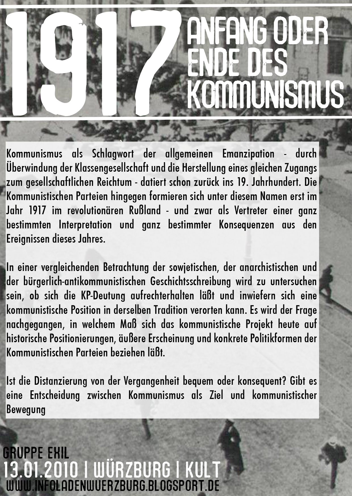

1917 – Anfang oder Ende des Kommunismus?
Wir haben am Mittwoch dem 13.01.2010 um 19:00 Uhr die Ehre Daniel Kulla im langweiligen Würzburg begrüßen zu dürfen. Der Vortrag wird im Kult stattfinden und wird von dem Verein für Kultur, Politik und Kritik in Würzburg mitgetragen.
Kommunismus als Schlagwort der allgemeinen Emanzipation – durch Überwindung der Klassengesellschaft und die Herstellung eines gleichen Zugangs zum gesellschaftlichen Reichtum – datiert schon zurück ins 19. Jahrhundert. Die Kommunistischen Parteien hingegen formieren sich unter diesem Namen erst im Jahr 1917 im revolutionären Rußland – und zwar als Vertreter einer ganz bestimmten Interpretation und ganz bestimmter Konsequenzen aus den Ereignissen dieses Jahres.
In einer vergleichenden Betrachtung der sowjetischen, der anarchistischen und der bürgerlich-antikommunistischen Geschichtsschreibung wird zu untersuchen sein, ob sich die KP-Deutung aufrechterhalten läßt und inwiefern sich eine kommunistische Position in derselben Tradition verorten kann. Es wird der Frage nachgegangen, in welchem Maß sich das kommunistische Projekt heute auf historische Positionierungen, äußere Erscheinung und konkrete Politikformen der Kommunistischen Parteien beziehen läßt.
Ist die Distanzierung von der Vergangenheit bequem oder konsequent? Gibt es eine Entscheidung zwischen Kommunismus als Ziel und kommunistischer Bewegung?


{kind=link}
3 Antworten auf “Vortrag: 1917”